Откройте ПК отпечатком, а не паролем Unlock your PC with a fingerprint, not a password
Portal превращает телефон и часы в защищённый беспроводной ключ от Windows. Работает на системном экране входа LogonUI и в диалогах UAC — без серверов, рекламы и подписок. Portal turns your phone and watch into a secure wireless key for Windows. It works directly on the LogonUI sign-in screen and in UAC prompts, with no cloud, no ads, and no subscriptions.
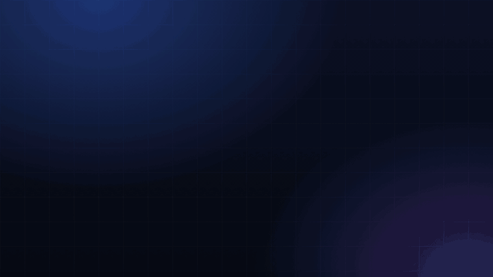
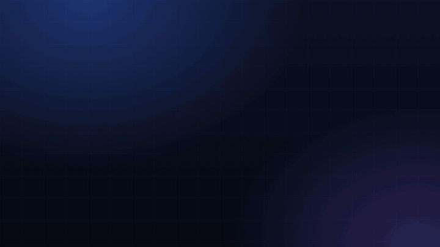
Три шага от блокировки до рабочего столаThree steps from lock screen to desktop
-
ПК ждёт подтвержденияThe PC waits for approval
На системной плитке пользователя появляется живая шкала с таймером. Windows заблокирован, пароль вводить не нужно.A live progress bar with a timer appears on the user tile. Windows stays locked and you type nothing.
-
Запрос приходит на телефон и часыThe request reaches your phone and watch
Всплывает окно «Unlock Request». Ответить можно на любом устройстве: кто первый ответил, тот и решает.An “Unlock Request” appears. Answer on either device: the first decision wins.
-
Отпечаток — и ПК открытA fingerprint, and the PC opens
Телефон подтверждает вас биометрией, и рабочий стол мгновенно разблокируется за доли секунды.Your phone confirms you with biometrics and the desktop unlocks in seconds.
Три способа открыть компьютерThree ways to unlock the computer
Инициируйте сами, ответьте на запрос от ПК или управляйте с запястья.Start it yourself, answer a request from the PC, or act from your wrist.
Нажали — открылосьTap and it opens
Из приложения, ярлыком на рабочем столе или плиткой в шторке быстрых настроек.From the app, a home-screen shortcut or a Quick Settings tile.
ПК сам просит ключThe PC asks for the key
Например, при включении или пробуждении. Вам остаётся только подтвердить биометрию.For example on boot or wake. You only confirm via biometrics.
Прямо с часовStraight from the watch
Разблокировка, Wake-on-LAN и ответ на запросы без необходимости брать телефон в руки.Unlock, Wake-on-LAN and answering requests without touching the phone.
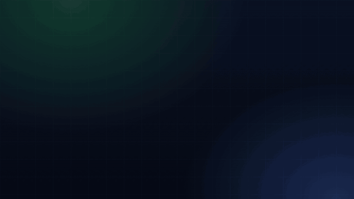
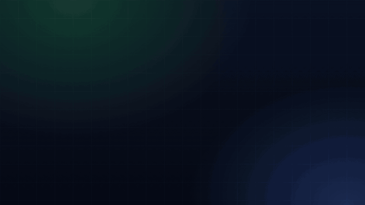
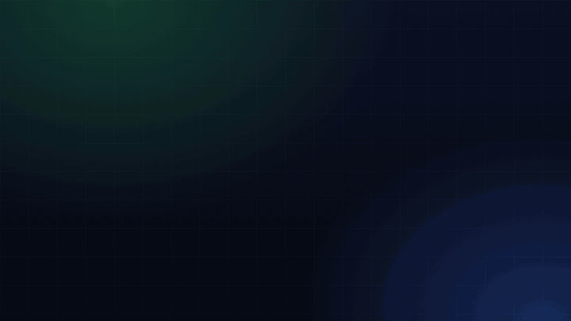
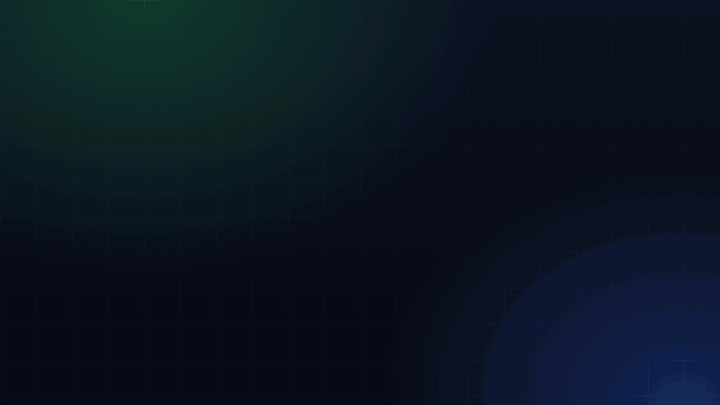
Так выглядит Portal на всех ваших экранахHow Portal looks on all your screens
Нативное приложение Windows 11, экран входа LogonUI с живой сетевой телеметрией, Android-клиент и круглые смарт-часы Wear OS.Native Windows 11 desktop application, LogonUI sign-in screen with live network telemetry, Android client, and round Wear OS smartwatch app.
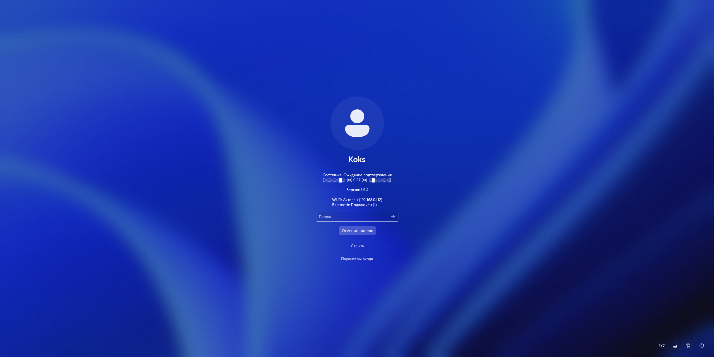
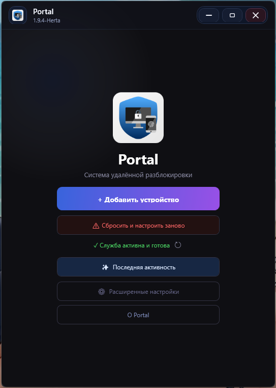
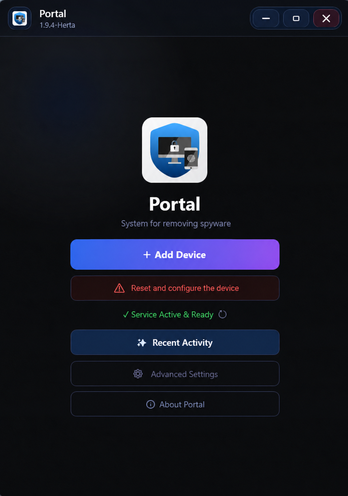
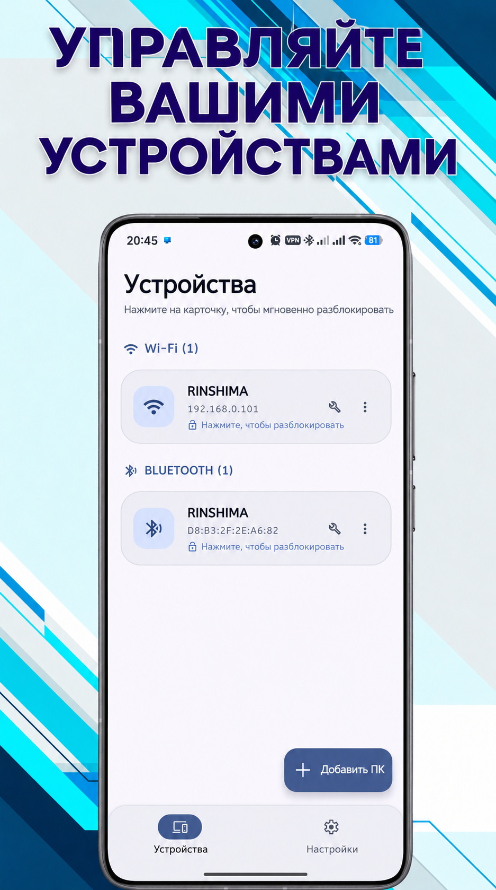
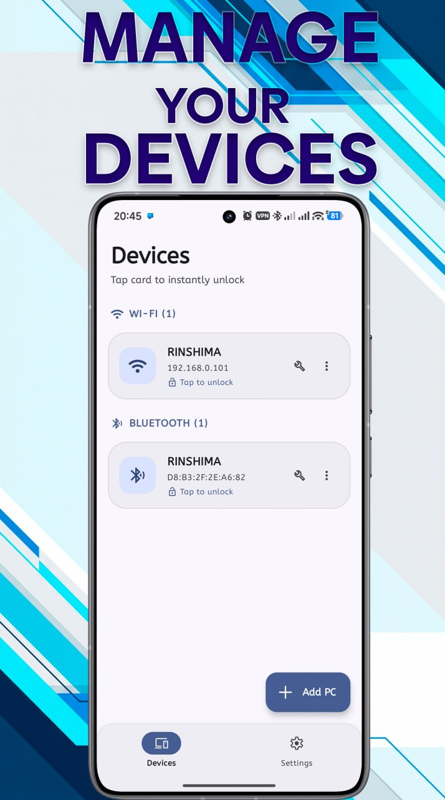
Тап по карточке — мгновенный входTap card for instant unlock
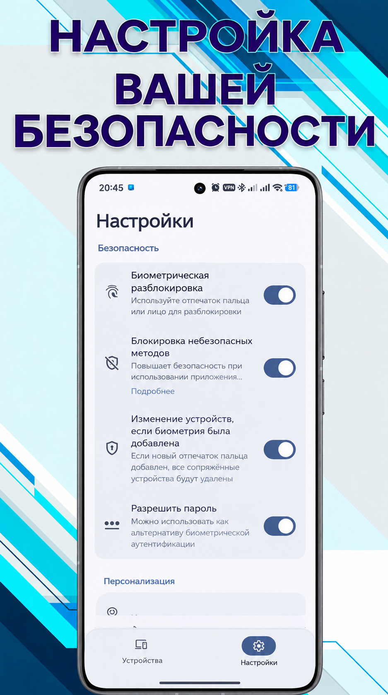
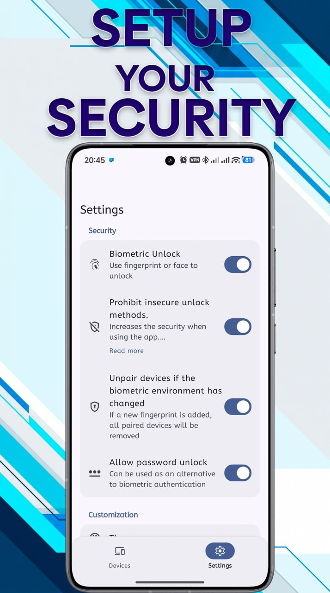
Ключи mTLS, биометрия и 2FA PINmTLS keys, biometrics & 2FA PIN
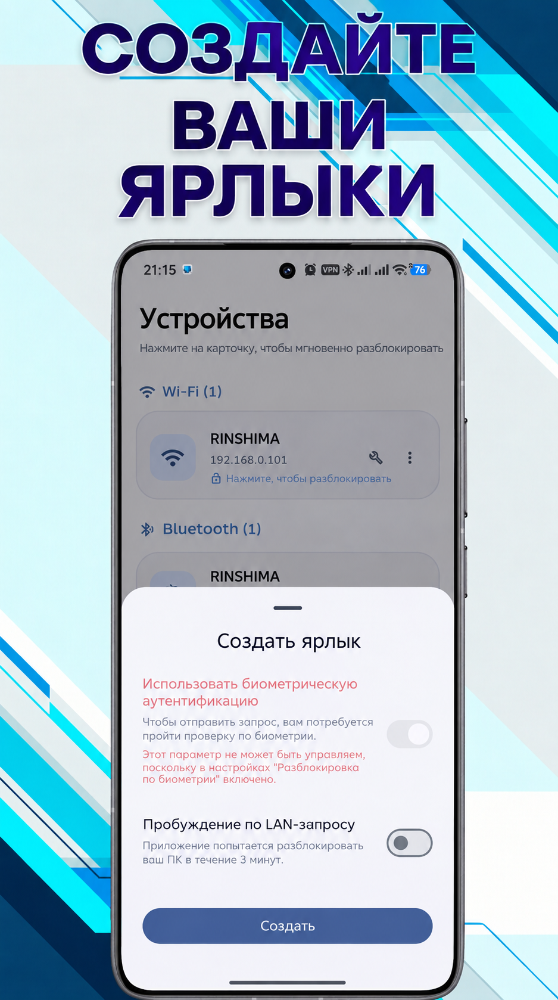
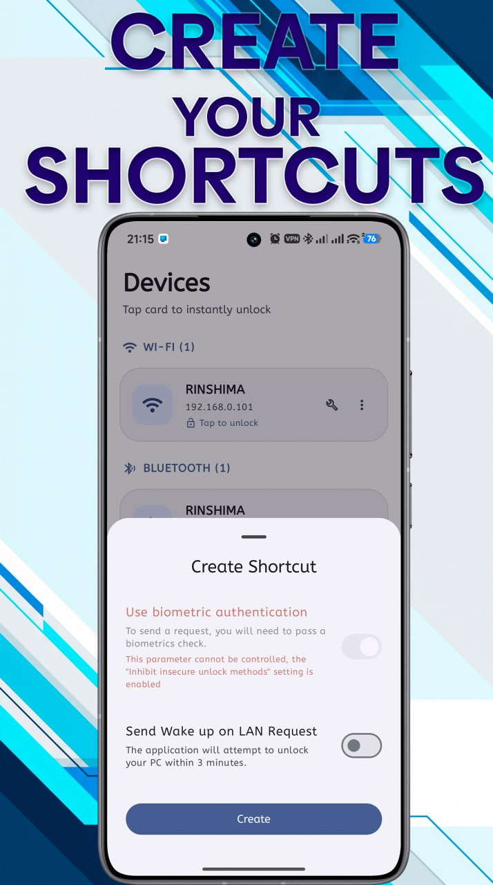
Виджеты и плитки в шторкеWidgets & Quick Settings tiles
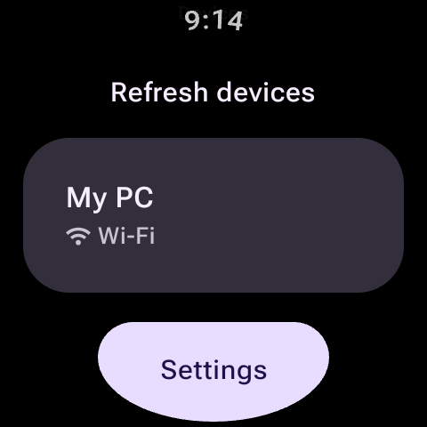
Список компьютеровPaired device list
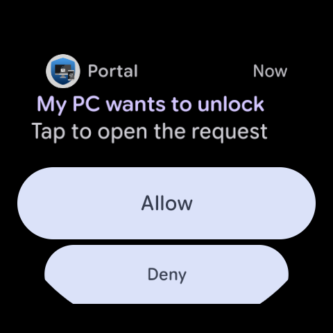
Кнопка прямо на экранеLarge wrist button
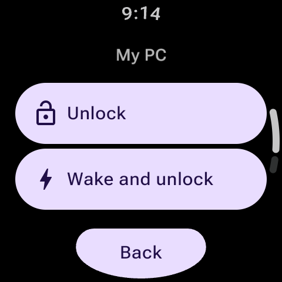
Выбор протокола связиConnection modes
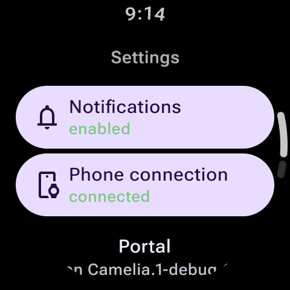
Включение ПК по сетиRemote power-on
Подключение занимает минутуPairing takes about a minute
-
Запустите службу на ПКStart the service on the PC
Откройте Portal.Host.exe от имени администратора. Служба зарегистрирует Credential Provider и автоматически откроет порт TCP 29170 и UDP 5353 в брандмауэре Windows.Run Portal.Host.exe as administrator. The service registers the Credential Provider and opens TCP 29170 and UDP 5353 in Windows Defender Firewall.
-
Выберите Wi-Fi или BluetoothPick Wi-Fi or Bluetooth
Во вкладке «Устройства» нажмите «Добавить» и укажите предпочтительный канал связи.In the Devices tab add a device and choose how it connects.
-
Отсканируйте QR-кодScan the QR code
Наведите камеру смартфона на монитор. Устройства безопасно обменяются криптографическими сертификатами mTLS.Point the phone camera at the monitor. The devices securely exchange mutual mTLS certificates.
-
Готово к работеDone
Нажмите Win + L и подтвердите вход отпечатком пальца.Press Win + L and approve the sign-in with your fingerprint.
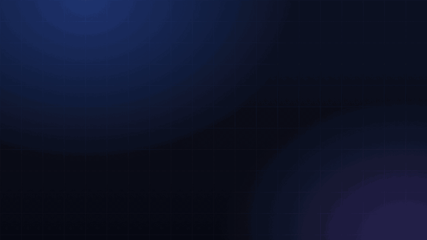
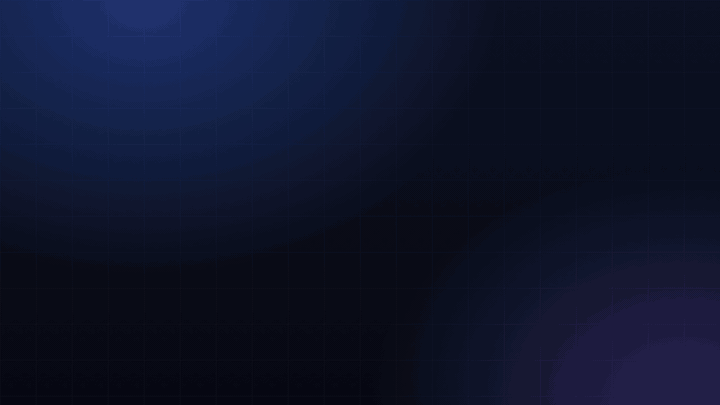
Права администратора тоже без пароляAdmin rights without a password too
Окна «Контроль учётных записей» подтверждаются с телефона, как и вход. Никаких ручных наборов сложного пароля админа.User Account Control prompts are approved from the phone, just like sign-in. Never type lengthy admin passwords again.
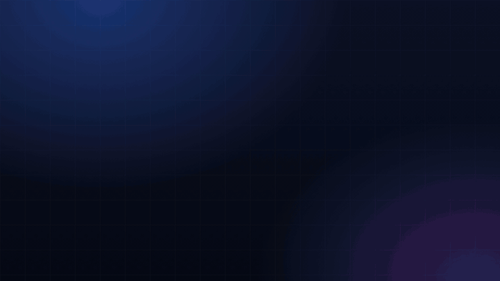
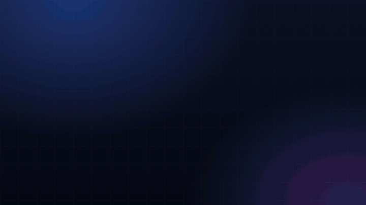
Работает, даже когда сеть подвелаKeeps working when the network doesn’t
Основной скоростной канал — локальная сеть TCP 29170, резервный автономный — Bluetooth RFCOMM. Смена сети и VPN подхватываются автоматически.High-speed primary network channel over TCP 29170, autonomous fallback over Bluetooth RFCOMM. Network switches and VPNs are picked up smoothly.
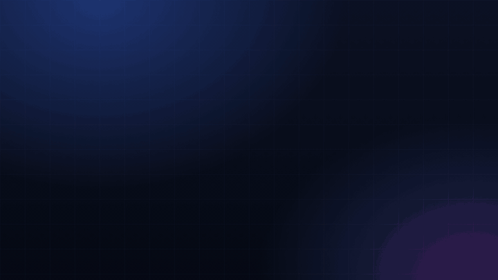
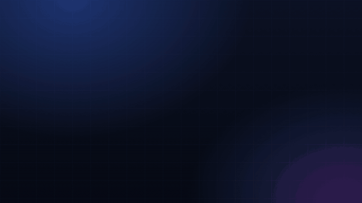
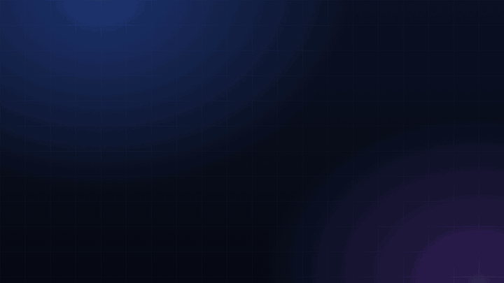
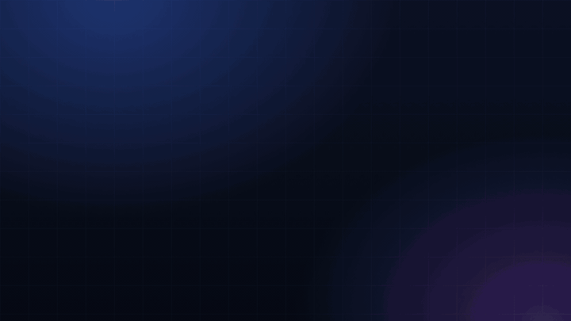
Пароль никогда не покидает ПКYour password never leaves the PC
- Windows LSA Secret Store Пароль не лежит в файлах или реестре. Он зашифрован системными ключами ОС и доступен строго процессу LogonUI в нулевой сессии. The password is not in files or the registry. It is protected by OS encryption and read strictly by LogonUI in session 0.
- mTLS X.509 (TCP 29170) Обе стороны проверяют индивидуальные сертификаты друг друга. Перехват или повтор пакетов полностью исключён. Both sides verify each other’s certificates. Replayed or intercepted packets are discarded immediately.
- Сопряжение только по QRQR-only pairing Разблокировать ПК может лишь то устройство, которое физически считало одноразовый динамический код с монитора. Only a device that physically scanned the dynamic one-time pairing QR code on your display is trusted.
- Биометрия и 2FA PINBiometrics and 2FA PIN Каждый вход подтверждается на телефоне. По желанию активируйте второй фактор — ввод PIN на клавиатуре ПК (PBKDF2-SHA256, 100 000 итераций). Every sign-in is confirmed on the phone. Optionally enable 2FA with a personal PIN typed on the PC keyboard.
- Zero-Cloud P2PZero-Cloud P2P Всё идёт напрямую по вашей домашней сети (порт 29170, mDNS 5353) или Bluetooth. Никаких сторонних серверов, телеметрии или облаков. Everything goes straight over your local network (port 29170, mDNS 5353) or Bluetooth. No external clouds, telemetry, or relays.
Почему именно Portal?Why Choose Portal?
Объективное сопоставление ключевых способов входа в Windows.Direct feature comparison against alternative Windows authentication methods.
| ПараметрFeature | Portal Unlock | Windows HelloWindows Hello | Обычный парольStandard Password | Облачные утилитыCloud Tools |
|---|---|---|---|---|
| Скорость входаUnlock Speed | ⚡ Мгновенно (P2P)Instant (P2P) | ⚡ МгновенноInstant | ❌ МедленноSlow (manual) | ⚡ БыстроFast |
| Оборудование ПКHardware Needed | ✅ Любой ПК (ноутбук/десктоп)Any PC (desktop/laptop) | ❌ Нужна IR-камера / USB-сканерNeeds IR Camera / Sensor | ✅ КлавиатураKeyboard | ✅ Любой ПКAny PC |
| Работа без интернетаOffline Operation | ✅ Да (LAN / Bluetooth)Yes (LAN / Bluetooth) | ✅ ДаYes | ✅ ДаYes | ❌ Нет (нужен интернет)No (internet required) |
| КонфиденциальностьPrivacy & Data | 🛡️ Zero-Cloud, mTLS X.509Zero-Cloud, mTLS X.509 | ✅ Локально на ПКLocal on PC | ⚠️ Риск подглядыванияShoulder surfing risk | ❌ Трафик через чужие сервераRouted via 3rd party cloud |
| Подтверждение UACUAC Elevation | ✅ Да (в один тап)Yes (One-tap biometric) | ⚠️ Не во всех сценарияхLimited scenarios | ❌ Ручной вводManual typing | ❌ Не поддерживаетсяNot supported |
| Управление с часовSmartwatch Support | ⌚ Wear OS автономноStandalone Wear OS | ❌ НетNo | ❌ НетNo | ⚠️ Редко / платноRare / Paid plugin |
| Стоимость и лицензияPrice & License | 🌟 Open Source (GPL-3.0)Open Source (GPL-3.0) | ✅ БесплатноFree | ✅ БесплатноFree | ❌ Подписка / рекламаSubscription / Ads |
Нужны две части: ПК и телефонYou need two parts: a PC and a phone
Установите клиент на компьютер с Windows и бесплатное приложение на смартфон или часы.Install the Windows client on your PC and the free mobile app on your smartphone or watch.
Portal-Windows v1.9.5 Herta
- Windows 10 (1809+) или Windows 11, x64Windows 10 (1809+) or Windows 11, x64
- Включает нативный модуль Credential Provider V2 и службу Portal.HostIncludes native Credential Provider V2 and Portal.Host desktop app
- .NET 10 Desktop Runtime входит в архивEmbedded .NET 10 Desktop Runtime included
- Релизы подписаны Authenticode, есть SHA-256 и подпись PKCS#7Authenticode-signed releases with SHA-256 and PKCS#7 signature
Portal Android · Wear OS Google Play
- Android 8.0+ с биометрическим сканеромAndroid 8.0+ with a biometric sensor
- Приложение для смарт-часов Wear OS в комплектеStandalone Wear OS watch app is included
- Виджеты на рабочий стол и переключатели в шторкуHome-screen shortcuts and Quick Settings tiles
- Без рекламы, трекеров и скрытых платежейNo ads, no tracking, no hidden costs
11:B8:C9:72:70:0E:87:EB:4E:B9:00:4E:15:68:D8:72:32:87:2C:9F:0F:73:A5:3D:30:E7:CD:CF:49:AF:88:85
Частые вопросыCommon questions
Нужен ли интернет для работы Portal?Do I need an internet connection?
Нет. Телефон и ПК общаются строго напрямую по локальной сети через порт TCP 29170 или через Bluetooth RFCOMM. Никаких внешних облачных серверов у Portal нет.No. The phone and PC communicate strictly peer-to-peer over your local network on port TCP 29170 or via direct Bluetooth RFCOMM. Portal has zero external cloud servers.
Можно ли по-прежнему вводить пароль вручную?Can I still type my password?
Да, в любой момент. Если начать вводить пароль на клавиатуре ПК, запрос на телефон немедленно отменяется, а фокус возвращается в стандартное поле ввода пароля Windows.Yes, anytime. As soon as you type on the keyboard, the pending mobile request is cancelled, with focus returned to the standard Windows password field.
Телефон не находит ПК. Какие порты используются?Phone cannot find PC. What network ports are used?
Служба Portal.Host использует порт TCP 29170 для защищённого соединения mTLS и порт UDP 5353 для сетевого обнаружения mDNS (Zeroconf _portalwin._tcp). При запуске от администратора приложение само добавляет эти правила в брандмауэр Windows. Кнопка «Проверить связь» в карточке устройства поможет протестировать задержку, а в меню настроек доступен экспорт диагностического ZIP-отчёта.The Portal.Host service uses port TCP 29170 for the secure mTLS connection and port UDP 5353 for mDNS discovery (Zeroconf _portalwin._tcp). When run as administrator, the app adds these rules to Windows Defender Firewall automatically. The "Test Connection" button tests latency, and the Settings menu provides an Export Diagnostics ZIP tool.
Работает ли с VPN и сменой сетей?Does it work with VPNs and network roaming?
Да, в том числе с WireGuard и OpenVPN. Виртуальные адаптеры туннеля исключаются из анонсов mDNS автоматически, а переключение между Wi-Fi и Bluetooth происходит бесшовно.Yes, WireGuard and OpenVPN included. Virtual tunnel adapters are filtered out of mDNS broadcasts automatically, with smooth fallback to Bluetooth.
Есть ли версия для iPhone (iOS)?Is there an iPhone (iOS) version?
Нет. Portal работает со смартфонами на базе Android и смарт-часами под управлением Wear OS.No. Portal currently supports Android smartphones and Wear OS smartwatches.
Это действительно бесплатно?Is it truly free?
Да. Оба проекта (Portal-Windows и Portal-Android) полностью открыты под свободной лицензией GPL-3.0, без рекламы, телеметрии и скрытых платежей.Yes. Both projects are 100% open source under GPL-3.0, with no ads, no trackers, and no hidden subscriptions.